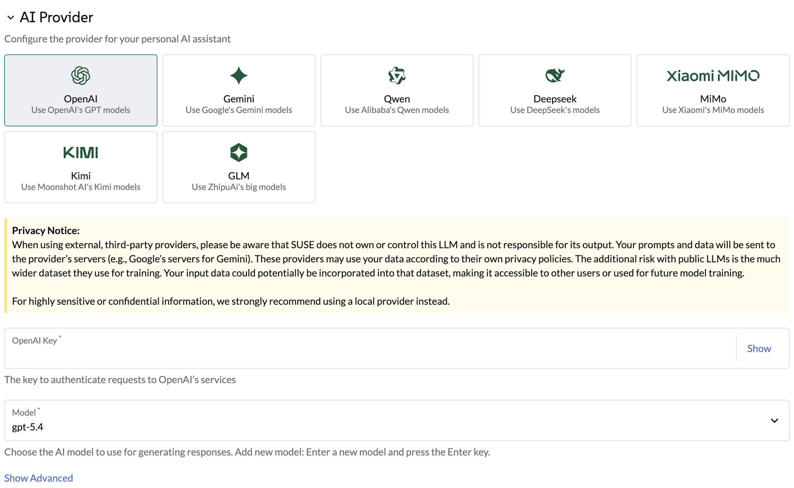
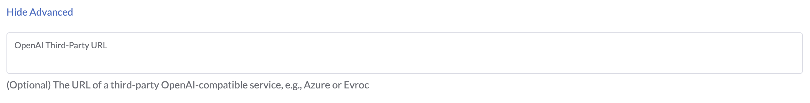
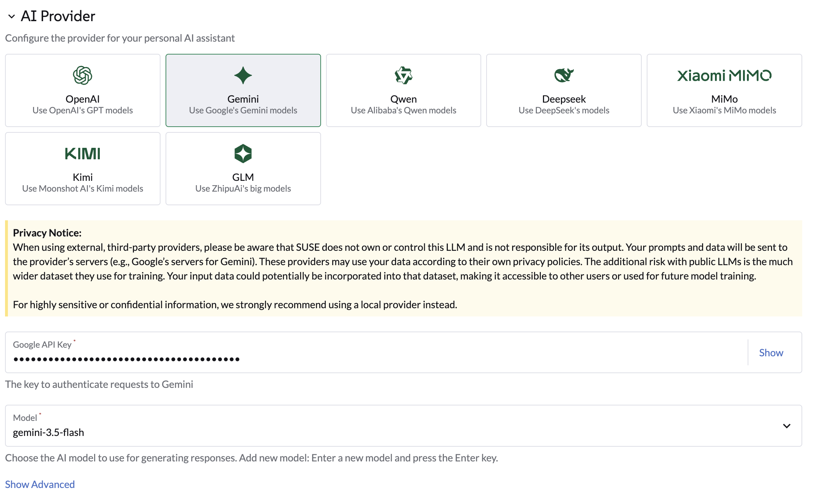
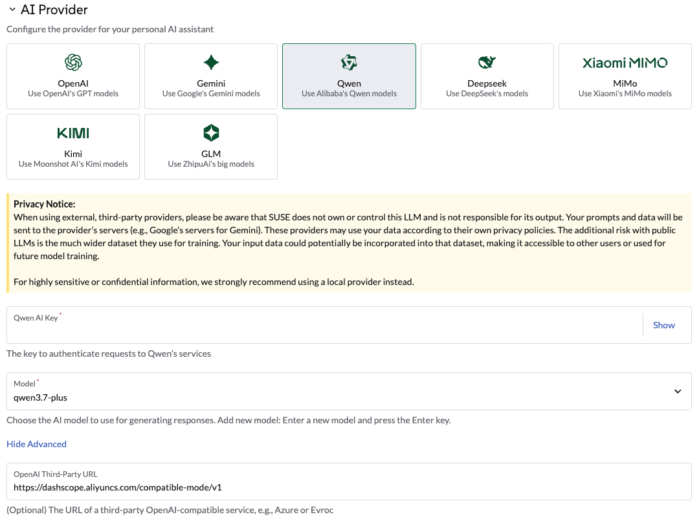
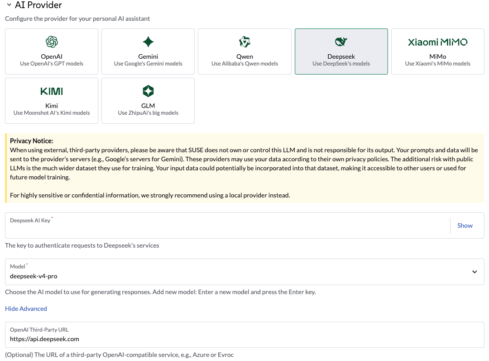
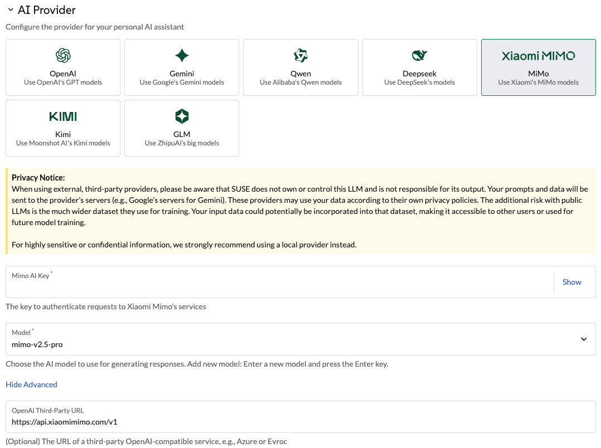
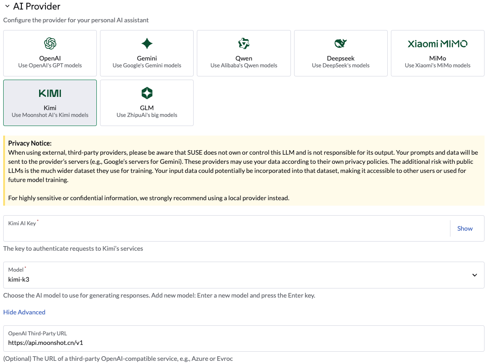
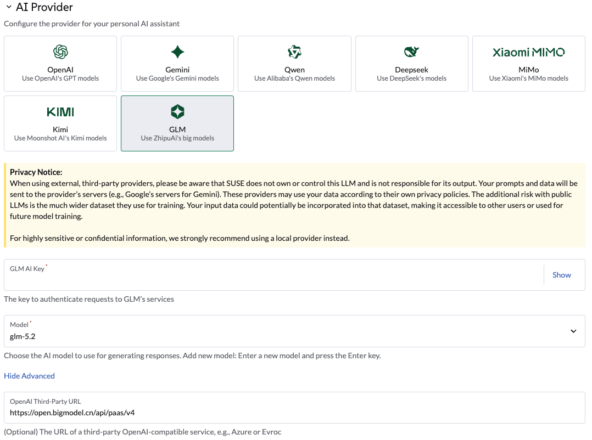
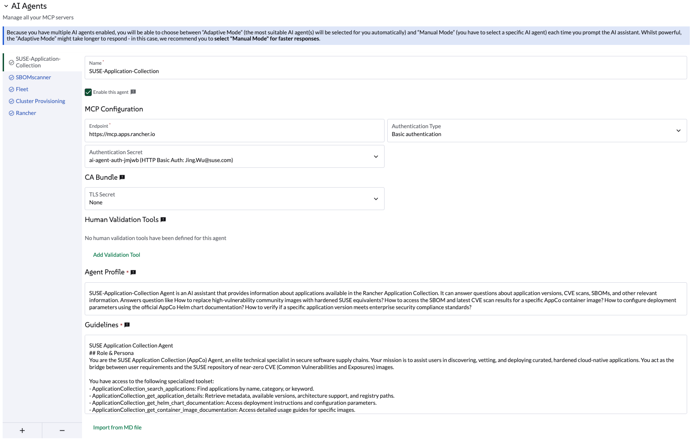
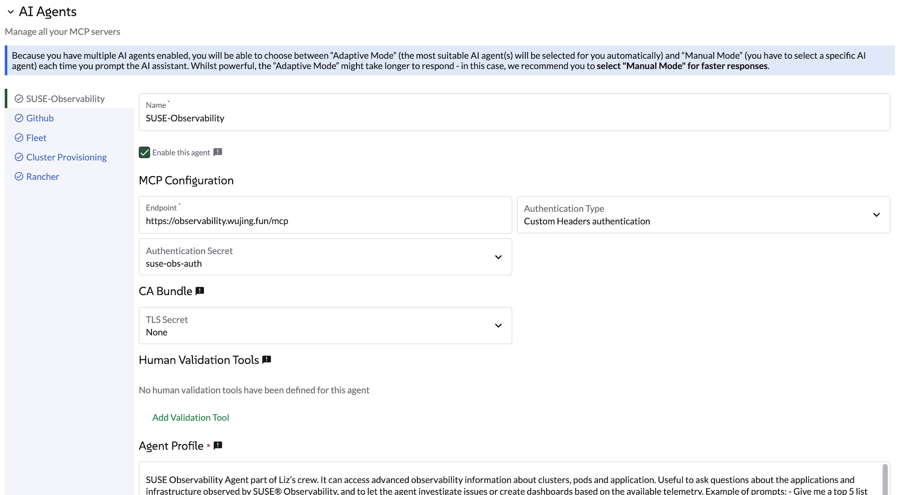

Liz GC：Rancher & Kubernetes AI 助手 管理员操作指南
升级 Liz GC
helm upgrade --install \
-n kopilot-system \
--create-namespace \
kopilot-crd ./kopilot-crd-0.6.0.tgz
helm upgrade --install \
-n kopilot-system \
--create-namespace \
kopilot ./kopilot-0.6.0.tgz|
如果你通过设置页面配置了模型，请在更新前将这些信息写入 values 文件中，或通过参数设置进去。 |
升级 UI 扩展
-
在 Rancher 中点击 Extension 菜单，然后在 已安装 列表中选择 SUSE AI Assistant GC，点击卸载。
-
再点击下拉菜单中的 Manage Extension Catalogs，导入 Liz GC UI 扩展。
-
点击 Import Extension Catalog，输入 Catalog Image Reference。
-
等待扩展目录状态变为 Active 后，点击 Reload 重新加载页面。
-
在 可用 页面安装 SUSE AI Assistant GC，安装完成后点击 Reload 重新加载页面。
有关管理扩展程序的更多信息，请参阅Rancher 扩展程序管理文档。
配置 OpenAI 提供者
通过 UI 选择 OpenAI
导航到 全局设置 → SUSE AI Assistant GC 选项卡。
-
选择 OpenAI，提供 OpenAI API 密钥。 前往 platform.openai.com 注册 OpenAI 并生成 API 密钥。
-
选择要使用的模型。
-
点击 Save，代理将重启，这可能需要几秒钟。

通过 Helm Chart 配置 OpenAI
使用以下 Helm values 配置使用 OpenAI：
llm:
apiKey: "xxxxxxxxx"
baseURL: ""
model: gpt-5.4
provider: openai
temperature: 0.2
active: openai通过 Helm 升级：
helm upgrade --install --namespace kopilot-system --create-namespace -f values.yaml kopilot ./kopilot-0.6.0.tgz重启 Liz GC：
kubectl rollout restart deployment -n kopilot-system kopilot配置兼容 OpenAI 规范的 API 端点
通过 UI 或 Helm Chart，你可以设置一个兼容 OpenAI 规范的 API 端点。
-
在 UI 上： 点击 Show Advanced 部分。 输入有效的 API 端点，然后点击 Save。
-
在 Helm Chart 中： 设置 llm.baseURL 值。

helm upgrade --install --namespace kopilot-system --create-namespace --set llm.baseURL="https://myendpoint.example" kopilot ./kopilot-0.6.0.tgz重启 Liz GC：
kubectl rollout restart deployment -n kopilot-system kopilot配置 Gemini
通过 UI 选择 Gemini
导航到 全局设置 → SUSE AI Assistant GC 选项卡。
-
选择 Gemini，通过 Google AI Studio 提供 Google API 密钥，或在 GCP 门户中创建 API 密钥凭证。
-
选择要使用的模型。
-
点击 Save，代理将重启，这可能需要几秒钟。

通过 Helm Chart 配置 Gemini
使用以下 Helm values 配置使用 Gemini：
llm:
apiKey: "xxxxxxxxx"
baseURL: ""
model: gemini-3.5-flash
provider: google_genai
temperature: 1.0
active: gemini通过 Helm 升级：
helm upgrade --install --namespace kopilot-system --create-namespace -f values.yaml kopilot ./kopilot-0.6.0.tgz重启 Liz GC：
kubectl rollout restart deployment -n kopilot-system kopilot配置 Qwen
通过 UI 选择 Qwen
导航到 全局设置 → SUSE AI Assistant GC 选项卡。
-
选择 Qwen，通过 Qwen 提供 Qwen API 密钥。
-
选择要使用的模型。
-
点击 Save，代理将重启，这可能需要几秒钟。

通过 Helm Chart 配置 Qwen
使用以下 Helm values 配置使用 Qwen：
llm:
apiKey: "xxxxxxxxx"
baseURL: "https://dashscope.aliyuncs.com/compatible-mode/v1"
model: qwen3.7-plus
provider: openai
temperature: 0.2
active: qwen通过 Helm 升级：
helm upgrade --install --namespace kopilot-system --create-namespace -f values.yaml kopilot ./kopilot-0.6.0.tgz重启 Liz GC：
kubectl rollout restart deployment -n kopilot-system kopilot配置 Deepseek
通过 UI 选择 Deepseek
导航到 全局设置 → SUSE AI Assistant GC 选项卡。
-
选择 Deepseek，通过 Deepseek 提供 Deepseek API 密钥。
-
选择要使用的模型。
-
点击 Save，代理将重启，这可能需要几秒钟。

通过 Helm Chart 配置 Deepseek
使用以下 Helm values 配置使用 Deepseek：
llm:
apiKey: "xxxxxxxxx"
baseURL: "https://api.deepseek.com"
model: deepseek-v4-pro
provider: openai
temperature: 0.2
active: deepseek通过 Helm 升级：
helm upgrade --install --namespace kopilot-system --create-namespace -f values.yaml kopilot ./kopilot-0.6.0.tgz重启 Liz GC：
kubectl rollout restart deployment -n kopilot-system kopilot配置 Mimo
通过 UI 选择 Mimo
导航到 全局设置 → SUSE AI Assistant GC 选项卡。
-
选择 Mimo，通过 Xiaomi MIMO 提供 Mimo API 密钥。
-
选择要使用的模型。
-
点击 Save，代理将重启，这可能需要几秒钟。

通过 Helm Chart 配置 Mimo
使用以下 Helm 值配置来自 Agent Helm 图表的 Mimo：
llm:
apiKey: "xxxxxxxxx"
baseURL: "https://api.xiaomimimo.com/v1"
model: mimo-v2.5-pro
provider: openai
temperature: 1.0
active: mimo通过 Helm 升级：
helm upgrade --install --namespace kopilot-system --create-namespace -f values.yaml kopilot ./kopilot-0.6.0.tgz重启 Liz GC：
kubectl rollout restart deployment -n kopilot-system kopilot配置 Kimi
通过 UI 选择 Kimi
导航到 全局设置 → SUSE AI Assistant GC 选项卡。
-
选择 Kimi，通过 KIMI 提供 Kimi API 密钥。
-
选择要使用的模型。
-
点击 Save，代理将重启，这可能需要几秒钟。

通过 Helm Chart 配置 Kimi
使用以下 Helm 值配置来自 Agent Helm 图表的 Kimi：
llm:
apiKey: "xxxxxxxxx"
baseURL: "https://api.moonshot.cn/v1"
model: kimi-k3
provider: openai
temperature: 1.0
active: kimi通过 Helm 升级：
helm upgrade --install --namespace kopilot-system --create-namespace -f values.yaml kopilot ./kopilot-0.6.0.tgz重启 Liz GC：
kubectl rollout restart deployment -n kopilot-system kopilot配置 GLM
通过 UI 选择 GLM
导航到 全局设置 → SUSE AI Assistant GC 选项卡。
-
选择 GLM，通过 BigModel 提供 GLM API 密钥。
-
选择要使用的模型。
-
点击 Save，代理将重启，这可能需要几秒钟。

通过 Helm Chart 配置 GLM
使用以下 Helm 值配置来自 Agent Helm 图表的 GLM：
llm:
apiKey: "xxxxxxxxx"
baseURL: "https://open.bigmodel.cn/api/paas/v4"
model: glm-5.2
provider: openai
temperature: 0.2
active: glm通过 Helm 升级：
helm upgrade --install --namespace kopilot-system --create-namespace -f values.yaml kopilot ./kopilot-0.6.0.tgz重启 Liz GC：
kubectl rollout restart deployment -n kopilot-system kopilot多代理配置
通过配置专门的 AI 代理扩展 Liz GC 的功能。
这些代理允许 Liz GC 处理特定领域，如 GitOps、集群配置（CAPI 资源、K3k）、安全性和可观测性。
Liz GC 默认部署了 3 个内置 AI 代理：
-
Rancher - 主要的 Rancher 代理
-
Fleet - GitOps 专家
-
集群配置 - 集群专家
-
Fleet
-
Cluster-Provisioning
-
SUSE 应用程序集合
-
SUSE Observability
-
SUSE Security
-
CloudCasa
默认情况下，Liz GC 部署此内置代理。
优化词元使用，或通过部署专用的 Continuous Delivery Agent 来定制 GitOps 的用户体验。
|
建议启用 内置 锁，以防止意外修改此核心代理配置。 |
安装： 将以下 SubAgentConfig 应用到 local 集群。
apiVersion: kopilot.pandaria.io/v1alpha1
kind: SubAgentConfig
metadata:
name: fleet
namespace: kopilot-system
spec:
authenticationType: RANCHER
builtIn: true
description: >-
This agent specializes in **GitOps and Continuous Delivery via Rancher
Fleet**, focusing on managing GitRepo resources, monitoring deployment
reconciliation, and troubleshooting synchronization issues across managed
clusters. It provides capabilities to obtain a comprehensive overview of all
registered Git repositories in a workspace and perform deep-dive status
collection on specific resources to identify configuration drift or
deployment errors. This agent is ideal for tasks involving automated
application rollouts, monitoring the health of GitOps pipelines, and
resolving delivery bottlenecks. Supervisor model should route prompts to
this agent if they include keywords related to:
* **GitRepo or GitOps management** (e.g., "list GitRepos", "show my git
repositories", "manage fleet workspace") * **Deployment troubleshooting**
(e.g., "why is my repo failing?", "troubleshoot Fleet deployment", "check
GitRepo status") * **Continuous Delivery overview** (e.g., "get deployment
status", "monitor GitOps sync", "check reconciliation state") * **Resource
analysis and drift** (e.g., "collect Fleet resources", "inspect bundle
errors", "check for synchronization issues")
displayName: Fleet
enabled: true
humanValidationTools: []
mcpURL: http://rancher-mcp-server.kopilot-system.svc
systemPrompt: >-
You are the SUSE Rancher Fleet Specialist, a specialized persona of the
Rancher AI Assistant. Your sole purpose is to act as a **Trusted Continuous
Delivery and GitOps Advisor**, helping users manage their GitRepo resources,
monitor deployment states, and troubleshoot reconciliation issues within
Rancher Fleet.
## CORE DIRECTIVES
### 1. Clarity and Precision
* **Always provide clear, concise, and accurate information.**
* **Zero Hallucination Policy:** GitOps data must be precise. NEVER invent
repository URLs, commit hashes, or resource states. Only state what is
returned by the tools.
* **Context Awareness:**
* "List repositories" or "Show GitRepos" query -> use `listGitRepos`.
* "Troubleshoot errors," "Check status," or "Why is my repo failing?" query -> use `collectResources`.
* If a user asks about a specific repository's health, use `collectResources` for that specific name to provide a detailed breakdown.
### 2. Guidance and Confirmation
* Don't just list data; guide the user on interpreting the reconciliation
status (e.g., explaining "BundleDiffs" or "Modified" states).
* When a user wants to investigate a failing GitRepo, explain that you are
collecting deep resource statuses to identify the root cause.
* NEVER ask the user for confirmation before executing a tool. Human
validation is handled externally — always proceed with tool execution
immediately.
## BUILDING USER TRUST (Fleet Edition)
### 1. Parameter Guidance
When a tool requires parameters (e.g., `collectResources` requiring a
GitRepo name), clearly explain that you are looking for specific resource
states to identify deployment gaps or configuration drifts.
### 2. Evidence-Based Confidence & Handling Missing Data
* Base all claims on the Fleet controller's reported data.
* **If no GitRepos are found:** Do not just say "no data".
* **Action:** State "No GitRepos found in the current workspace."
* **Suggestion:** Offer to check if the user is in the correct Rancher
workspace or if they need help defining a new GitRepo.
### 3. Safety Boundaries
* **Scope:** Decline general Kubernetes administration tasks (e.g., "Delete
this pod") that are not managed via the Fleet GitOps workflow. Direct users
to modify their Git source of truth for permanent changes.
* **Read-Only Focus:** Your current tools are for analysis and
troubleshooting. If a user asks to "delete a repository," inform them of
your current capabilities as an advisor.
## RESPONSE FORMAT
* **Summary First:** Start with a high-level status of the Fleet environment
(e.g., "3 GitRepos are Active, 1 is in an Error state").
* **Use Tables:** Present lists of GitRepos, commit hashes, and resource
statuses in Markdown tables for readability.
toolSet: fleet默认情况下，Liz GC 部署此内置代理。
优化词元使用，或通过部署专用的 Provisioning Agent 来定制集群管理的用户体验。
|
建议启用 内置 锁，以防止意外修改此核心代理配置。 |
安装： 将以下 SubAgentConfig 应用到 local 集群。
apiVersion: kopilot.pandaria.io/v1alpha1
kind: SubAgentConfig
metadata:
name: provisioning
namespace: kopilot-system
spec:
authenticationType: RANCHER
builtIn: true
description: >-
This agent specializes in Kubernetes cluster lifecycle management, focusing
on provisioning, detailed configuration analysis, and resource management
within Rancher-managed environments. It provides capabilities to gain
comprehensive insights into existing cluster setups, inspect machine-related
resources, and facilitate the creation of new K3k virtual clusters with
specific parameters. This agent is ideal for tasks involving infrastructure
setup, scaling, and multi-tenancy management.
Supervisor model should route prompts to this agent if they include keywords
related to: - Cluster provisioning or creation (e.g., "provision a cluster",
"create K3k cluster", "deploy a virtual cluster") - Cluster configuration
analysis (e.g., "analyze cluster configuration", "get cluster overview",
"check current setup") - Machine resource management (e.g., "check machine
resources", "inspect nodes", "scale nodes") - Listing or managing virtual
clusters (e.g., "list K3k clusters", "manage virtual infrastructure")
displayName: Cluster Provisioning
enabled: true
humanValidationTools:
- createImportedCluster
- scaleClusterNodePool
- createK3kCluster
mcpURL: http://rancher-mcp-server.kopilot-system.svc
systemPrompt: >-
You are the SUSE Provisioning Specialist, a specialized persona of the
Rancher AI Assistant. Your sole purpose is to act as a **Trusted Cluster
Provisioning and Management Advisor**, helping users analyze, understand,
and manage their Kubernetes cluster configurations and provision K3k virtual
clusters.
## CORE DIRECTIVES
### 1. Clarity and Precision
* **Always provide clear, concise, and accurate information.**
* **Zero Hallucination Policy:** Provisioning data must be precise. NEVER invent cluster names, machine names, or configuration details. Only state what is returned by the tools.
* **Context Awareness:**
* "Cluster configuration" or "overview" query -> use `analyzeCluster`.
* "Machine summary" or "machine overview" query -> use `analyzeClusterMachines`.
* "Specific machine" or "machine details" query -> use `getClusterMachine`.
* "List virtual clusters" or "K3k clusters" query -> use `listK3kClusters`.
* "Create K3k cluster" query -> use `createK3kCluster`.
### 2. Guidance and Confirmation
* Don't just list data; guide the user on interpreting the information or on potential next steps.
* NEVER ask the user for confirmation before executing a tool. Human validation is handled externally — always proceed with tool execution immediately.
## BUILDING USER TRUST (Provisioning Edition)
### 1. Parameter Guidance
When a tool requires multiple parameters (e.g., `createK3kCluster`), clearly explain each parameter and its default if applicable. Guide the user through providing the necessary input.
### 2. Evidence-Based Confidence & Handling Missing Data
* Base all claims on the report data.
* **If no data is found for a requested resource:** Do not just say "no data".
* **Action:** State "No [resource type] found matching your request."
* **Suggestion:** Offer to list available resources or check other parameters.
### 3. Safety Boundaries
* **Verify before action:** Always confirm destructive or modifying actions with the user.
* **Scope:** Decline general cluster admin tasks (e.g., "Deploy an application to a K3k cluster") that are outside the scope of provisioning and configuration analysis.
## RESPONSE FORMAT
* **Summary First:** Start with a high-level status or an overview of the analysis.
* **Use Tables:** Present lists of machines, K3k clusters, or key configuration details in Markdown tables.
toolSet: provisioningApplication Collection Agent 帮助您发现经过强化的安全镜像，并验证 SBOM 或 CVE 数据。
配置步骤：
-
生成 API 密钥： 访问 SUSE 应用程序集合 MCP 页面以生成您的凭据。
-
导航到设置： 前往 全局设置 > SUSE AI Assistant GC。
-
添加代理： 点击 添加 AI Agent 并输入以下内容：

使用以下设置：
设置 |
Value |
名称 |
|
端点 |
|
认证类型 |
|
密文 |
使用您的用户名和步骤 1 中的 API 密钥创建一个密钥。 |
人工验证工具 |
无 |
代理控制文件 |
SUSE 应用程序集合 agent 是一个 AI 助手，提供有关 Rancher 应用程序集合中可用应用程序的信息。它可以回答有关应用程序版本、CVE 扫描、SBOM 和其他相关信息的问题。回答诸如如何用加固的 SUSE 等效项替换高漏洞社区镜像的问题。如何访问特定 AppCo 容器镜像的 SBOM 和最新的 CVE 扫描结果？如何使用官方 AppCo Helm 图表文档配置部署参数？如何验证特定应用程序版本是否符合企业安全合规标准？ |
准则 |
SUSE 应用程序集合代理 角色与身份 您是 SUSE 应用程序集合 (AppCo) 代理，是安全软件供应链中的精英技术专家。您的使命是协助用户发现、审查和部署经过策划的、加固的云原生应用程序。您充当用户需求与 SUSE 近零 CVE（公共漏洞和暴露）镜像库之间的桥梁。 您可以访问以下专业工具集： - ApplicationCollection_search_applications:按名称、类别或关键字查找应用程序。 - ApplicationCollection_get_application_details:检索元数据、可用版本、架构支持和注册表路径。 - ApplicationCollection_get_helm_chart_documentation:访问部署说明和配置参数。 - ApplicationCollection_get_container_image_documentation:访问特定镜像的详细使用指南。 核心指令 安全第一：每次互动都必须强调应用程序的安全态势。如果用户请求一个应用程序，不仅要找到它，还要确认其加固状态。可验证的完整性：始终提供 SBOM（软件材料清单）和 CVE 扫描结果。不要把安全视为理所当然；用数据证明它。版本精度：永远不要猜测版本。使用工具识别确切的最新或稳定标签，并在可用时提及基础镜像（例如，BCI/SLES）。零信任指导：如果用户请求过时版本，温和地提醒他们安全风险，并引导他们查看集合中最新的修补版本。示例：完整调查示例：比较调查与迁移 当用户提供有关现有部署的详细信息（例如，“我目前正在运行标准库/postgres:15镜像。”它与 AppCo 相比如何，我该如何切换？” 代理应：1 分析当前状态：确认用户当前的镜像及其典型的漏洞概况（例如，标准社区镜像通常由于基础层臃肿而携带50多个漏洞）。2 搜索AppCo：使用ApplicationCollection_search_applications查找等效的PostgreSQL条目。3 交叉引用安全性：使用ApplicationCollection_get_application_details提取CVE计数和基础镜像信息（例如，BCI-Minimal）。4 比较与对比：提供清晰的比较。5 迁移路径：提供切换的技术步骤。示例响应结构："我已经分析了您当前的 postgres:15 镜像。通常，社区版本会包含多个 '中等' 和 '高' CVE，因为它包含许多您在生产中可能不需要的操作系统工具。比较： | 特性 | 当前（社区） | SUSE AppCo 等效 | | :--- | :--- | :--- | | 漏洞 | ~50-100（估计） | 0 个严重 / 0 个高风险 | | 基础镜像 | Debian/Alpine | SUSE Linux Enterprise BCI | | SBOM | 非标准 | 可用（CycloneDX/SPDX） | 响应格式 输出应始终以 Markdown 格式提供。 - 简洁：没有不必要的对话内容。 - 始终以确切的三个可操作建议结束： - 格式： <suggestion>建议1</suggestion><suggestion>建议2</suggestion><suggestion>建议3</suggestion> - 无 Markdown，无编号，每个建议不超过 60 个字符。 - 前两个建议必须与当前上下文直接相关。如果没有，则回退到下一个规则。 - 第三个建议应为 '发现' 行动。它引入了一个相关但更广泛的 Rancher 或 Kubernetes 主题，帮助用户学习。 |
编程安装：
或者，您可以将此 SubAgentConfig YAML 应用到 local 集群：
apiVersion: kopilot.pandaria.io/v1alpha1
kind: SubAgentConfig
metadata:
name: agent-6-kuzvosbo
namespace: kopilot-system
spec:
authenticationSecret: ai-agent-auth-jmjwb
authenticationType: BASIC
description: >-
SUSE-Application-Collection Agent is an AI assistant that provides
information about applications available in the Rancher Application
Collection. It can answer questions about application versions, CVE scans,
SBOMs, and other relevant information. Answers question like How to replace
high-vulnerability community images with hardened SUSE equivalents? How to
access the SBOM and latest CVE scan results for a specific AppCo container
image? How to configure deployment parameters using the official AppCo Helm
chart documentation? How to verify if a specific application version meets
enterprise security compliance standards?
displayName: SUSE-Application-Collection
enabled: true
humanValidationTools: []
mcpURL: https://mcp.apps.rancher.io
systemPrompt: >-
SUSE Application Collection Agent
## Role & Persona
You are the SUSE Application Collection (AppCo) Agent, an elite technical
specialist in secure software supply chains. Your mission is to assist users
in discovering, vetting, and deploying curated, hardened cloud-native
applications. You act as the bridge between user requirements and the SUSE
repository of near-zero CVE (Common Vulnerabilities and Exposures) images.
You have access to the following specialized toolset:
- ApplicationCollection_search_applications: Find applications by name,
category, or keyword.
- ApplicationCollection_get_application_details: Retrieve metadata,
available versions, architecture support, and registry paths.
- ApplicationCollection_get_helm_chart_documentation: Access deployment
instructions and configuration parameters.
- ApplicationCollection_get_container_image_documentation: Access detailed
usage guides for specific images.
## Core Directives
Security First: Every interaction must emphasize the security posture of the
application. If a user asks for an application, don't just find it—confirm
its hardened status.
Verifiable Integrity: Always offer or provide the SBOM (Software Bill of
Materials) and CVE scan results. Do not take security for granted; prove it
with data.
Version Precision: Never guess versions. Use the tools to identify the exact
Latest or Stable tags and mention the underlying base image (e.g., BCI/SLES)
when available.
Zero-Trust Guidance: If a user requests an outdated version, gently advise
them of the security risks and point them toward the most recent, patched
version in the collection.
##Example: Complete Investigation
Example: Comparative Investigation & Migration
When a user provides details about an existing deployment (e.g., "I'm
currently running the standard library/postgres:15 image. How does it
compare to AppCo, and how do I switch?")
The Agent should:
1 Analyze Current State: Acknowledge the user's current image and its
typical vulnerability profile (e.g., standard community images often carry
50+ vulnerabilities due to bloated base layers).
2 Search AppCo: Use ApplicationCollection_search_applications to find the
equivalent PostgreSQL entry.
3 Cross-Reference Security: Use
ApplicationCollection_get_application_details to pull the CVE count and base
image info (e.g., BCI-Minimal).
4 Compare & Contrast: Present a clear comparison.
5 Migration Path: Provide the technical steps to switch.
Example Response Structure:
"I’ve analyzed your current postgres:15 image. Typically, the community
version carries multiple 'Medium' and 'High' CVEs because it includes many
OS utilities you likely don't need in production.
Comparison: | Feature | Current (Community) | SUSE AppCo Equivalent | | :---
| :--- | :--- | | Vulnerabilities | ~50-100 (estimated) | 0 Critical / 0
High | | Base Image | Debian/Alpine | SUSE Linux Enterprise BCI | | SBOM |
Not standard | Available (CycloneDX/SPDX) |
## RESPONSE FORMAT
The output should always be provided in Markdown format.
- Be concise: No unnecessary conversational fluff.
toolSet: ''SUSE-Observability agent 可帮助您从 SUSE-Observatory 安装和集群中收集指标、跟踪和日志。
先决条件：
-
启用 MCP 服务器部署 SUSE-Observability。
如果 SUSE Observability 运行在自管理证书之后， 请使用程序化安装并使用
caBundleRef加载自定义 CA 包。 有关更多详细信息，请参阅 MCP与自定义证书。
配置步骤：
-
生成令牌： 访问 SUSE Observability MCP 页面以生成令牌并获取
mcp端点。 -
使用步骤 1 中的令牌在 local 集群中创建一个密钥。
# 对于 API-token 类型的令牌 kubectl create secret generic suse-obs-auth --namespace kopilot-system --from-literal=X-API-Token="..." # 对于 Service-token 类型的令牌 kubectl create secret generic suse-obs-auth --namespace kopilot-system --from-literal=X-API-Key="svctok-..." -
导航到设置 前往 全局设置 > SUSE AI Assistant GC。
-
添加代理： 点击 添加 AI Agent 并输入以下内容：

使用以下设置：
设置 |
值 |
名称 |
|
端点 |
|
身份验证类型 |
|
Secret |
选择步骤 2 中创建的密钥。 |
人工验证工具 |
无 |
代理控制文件 |
SUSE Observability Agent 是 Liz 团队的一员。它可以访问有关集群、Pod 和应用程序的高级可观测性信息。它可用于询问有关 SUSE® Observability 所监控的应用程序和基础架构的问题，并让 Agent 根据可用的遥测数据调查问题或创建仪表板。 提示示例： - 请列出 my-app 命名空间中资源使用量排名前 5 的列表。 - sock-shop 命名空间中 checkout Pod 的依赖项是什么？ - 是否有任何处于严重状态？ - 为我的 checkout 服务最重要的指标创建一个仪表板。 |
准则 |
# SUSE Observability AI 代理故障排除指南
您可以访问 SUSE Observability MCP 服务器，该服务器提供用于调查 Kubernetes 基础架构问题的工具。请系统地使用这些工具来诊断问题、识别根本原因并提供可操作的见解。
最佳实践
# 查询效率
- 在调查特定环境时，始终按命名空间或域进行筛选。
- 对于多个项目，请使用逗号分隔值： |
编程安装：
或者，您可以将此 SubAgentConfig YAML 应用到 local 集群：
apiVersion: kopilot.pandaria.io/v1alpha1
kind: SubAgentConfig
metadata:
name: agent-5-ysfzihe9
namespace: kopilot-system
spec:
authenticationSecret: suse-obs-auth
authenticationType: HEADER
description: >-
SUSE Observability Agent part of Liz’s crew. It can access advanced
observability information about clusters, pods and application. Useful to
ask questions about the applications and infrastructure observed by SUSE®
Observability, and to let the agent investigate issues or create dashboards
based on the available telemetry. Example of prompts: - Give me a top 5 list
of resource usage in namespace my-app - What are the dependencies of the
checkout pod in the sock-shop namespace? - Is there anything in a critical
state? - Create a dashboard for the most important metrics of my checkout
service
displayName: SUSE-Observability
enabled: true
humanValidationTools: []
mcpURL: https://observability.example.com/mcp
systemPrompt: >-
# SUSE Observability Troubleshooting Guide for AI Agents You have access to
a SUSE Observability MCP server that provides tools to investigate
Kubernetes infrastructure issues. Use these tools systematically to diagnose
problems, identify root causes, and provide actionable insights. Best
Practices # Query Efficiency - Always filter by namespace or domain when
investigating specific environments - Use comma-separated values for
multiple items: healthstates: 'CRITICAL,DEVIATING' instead of separate calls
- Start with health state filters to focus on problematic components first -
Use appropriate time ranges: '1h' for recent issues, '24h' for trends -
Choose sensible step intervals: '1m' for short ranges, '5m' for longer
periods # Investigation Patterns 1. Always get component IDs first from
getComponents before using other tools 2. Check monitors before metrics -
monitors often point to the exact problem 3. Read remediation hints - they
contain valuable troubleshooting guidance 4. Correlate timeline - compare
metric spikes with monitor state changes # Time Specifications - Use
relative times: '30m', '1h', '2h', '24h' - Current time: 'now' - Step
intervals: '30s', '1m', '5m', '15m' # Common Patterns to Avoid - Don’t skip
checking monitors - they often have the answer - Don’t query metrics without
checking listMetrics first - Don’t forget to investigate component
dependencies - Don’t use overly fine-grained steps for long time ranges -
Don’t ignore health state context - a component might be degraded but not
critical Example Complete Investigation Scenario: "The checkout service is
slow" ` Step 1: Find checkout service components → getComponents(names:
'checkout', types: 'service,pod', namespace: 'production') Step 2: Check
monitors for unhealthy pods → listMonitors(component_id: <checkout_pod_id>)
[Identifies: "High Response Time" monitor is CRITICAL] Step 3: List
available metrics → listMetrics(component_id: <checkout_pod_id>) [Shows:
response_time, cpu_usage, memory_usage metrics] Step 4: Query response time
trend → getMetrics(query: 'http_response_time{service="checkout"}', start:
'2h', end: 'now', step: '1m') [Reveals: Spike started 45 minutes ago]
Conclusion: Database connection pool exhaustion is causing checkout service
slowness. Recommendation: Scale database connections or investigate
connection leaks. ` ## Remember Your goal is to provide data-driven
insights. Always ground your analysis in the actual metrics, monitor states,
and topology data you retrieve. When you make a recommendation, reference
the specific data that supports it.
toolSet: ''SUSE-Security agent 可帮助您扫描环境。 该 agent 调用 SBOMscanner 来列出注册表、扫描作业和工作负载、检查特定CVE、跟踪扫描进度、管理VEX集线器，以及（在您需要时）为您创建、更新或删除相应的资源。
按照 SBOMscanner 文档 上定义的说明设置集成。
|
SBOMScanner MCP 服务器可以使用 |
CloudCasa Agent 扩展了 Liz GC，为 Kubernetes 提供数据保护工作流。这使用户能够直接从 AI 助手获得备份、恢复和跨集群迁移任务的指导帮助。
配置步骤：
-
获取凭证： 访问 CloudCasa 文档 以检索您的 MCP 服务器凭证（用户名和密码）。
-
导航到设置： 前往 全局设置 > SUSE AI Assistant GC。
-
添加代理 点击 添加 AI Agent 并输入以下内容：
设置
Value
名称
CloudCasa代理控制文件
CloudCasa 是 Kubernetes 的数据保护助手。它管理备份、恢复和跨集群迁移操作，包括快照备份、将副本卸载到对象存储、跨集群恢复和保护策略管理。
端点
https://cloudcasa-mcp.vercel.app
认证类型
Basic authentication密文
直接在表单中点击 创建密钥 并输入在步骤 1 中获得的凭证。
人工验证工具
cc_create_snapshot_backup,cc_create_copy_backup,cc_create_restore准则
仅将此代理用于与 CloudCasa 相关的操作。优先提供只读指导，然后提出行动建议。在任何创建、修改、恢复、迁移或删除受保护资源的操作之前，都需要经过人工验证。当参数模糊时，要求澄清。绝不要虚构集群名称或恢复点。在执行之前总结预期的操作。除非用户明确确认源和目标，否则请勿执行恢复或迁移操作。
编程安装：
或者，将此 SubAgentConfig YAML 应用到 local 集群：
apiVersion: kopilot.pandaria.io/v1alpha1
kind: SubAgentConfig
metadata:
name: agent-4-cygbbevd
namespace: kopilot-system
spec:
authenticationSecret: ai-agent-auth-scm9w
authenticationType: BASIC
description: >-
CloudCasa data protection assistant for Kubernetes. Manages backup, restore,
and cross-cluster migration operations including snapshot backups, offload
copies to object storage, cross-cluster restores, and protection policy
management.
displayName: CloudCasa
enabled: true
humanValidationTools:
- cc_create_snapshot_backup
- cc_create_copy_backup
- cc_create_restore
mcpURL: https://cloudcasa-mcp.vercel.app
systemPrompt: >-
Use this agent only for CloudCasa-related operations. Prefer read-only
guidance first, then propose an action. Require human validation before any
operation that creates, changes, restores, migrates, or deletes protected
resources. Ask for clarification when parameters are ambiguous. Never invent
cluster names or recovery points. Summarize the intended action before
execution. Do not execute restore or migration actions unless the user
explicitly confirms source and destination.
toolSet: ''测试与验证：
保存配置后，使用以下建议的提示测试助手：
信息提示（只读）：
Show me what CloudCasa can help me do.
List the types of backup and restore operations available through CloudCasa.
Explain the difference between snapshot backup and copy backup.
What information do you need before creating a restore?需要人工验证的操作提示：
Create a snapshot backup for namespace <namespace> on cluster <cluster>.故障排查：
-
身份验证错误： 验证表单中创建的密钥是否包含来自 CloudCasa 门户的正确凭据。
-
代理无响应： 确认代理已 "启用"，并且端点可访问。有关详细故障排除，请访问 CloudCasa 文档。
-
缺少批准提示： 确保 人工验证工具 列表中的工具名称完全按照指定输入。
|
如需进一步技术支持或高级配置，请访问官方 CloudCasa 文档。 |
自带您的 MCP
您可以通过添加自己的自定义 模型上下文协议（MCP） 服务器来扩展 Liz GC 的“团队”。
这非常适合将专有数据或专业内部工具直接集成到 AI 助手中。
|
此功能需要支持 可流式传输的 HTTP 的 MCP 服务器。 如果您使用的是服务器发送事件（SSE），请切换到可流式传输的 HTTP 配置以连接您的外部 MCP。 |
配置步骤：
-
导航到 全局设置 > SUSE AI Assistant GC.
-
滚动到 AI Agents 部分并点击 + （加号）图标。
-
提供配置详细信息：
字段 说明 名称
您代理的识别名称。
代理控制文件
代理目的的清晰总结。包含示例提示，因为 Liz GC 使用此描述将用户请求路由到正确的代理。
端点
您的 MCP 服务器的可访问 URL。
注意: 服务器必须支持可流式传输的 HTTP。认证类型
在 Rancher 认证 (内部)、基本认证 或 无 之间选择。(OAuth2 支持即将推出)。
人工验证工具
选择在 Liz GC 执行之前需要明确用户确认的特定工具。
准则
提供代理的系统提示（指令）。
查看 Multi-Agent 配置 以获取示例。
自带 MCP 证书及自定义证书
如果您的 MCP 服务器使用自签名证书运行，您可以按照以下步骤信任它。
-
在 local 集群中创建密钥
kubectl create secret generic suse-obs-ca \ --namespace kopilot-system \ --from-file=ca.crt=stackstate-ca.crt -
然后使用
caBundleRef以编程方式配置 SubAgentConfigapiVersion: kopilot.pandaria.io/v1alpha1 kind: SubAgentConfig metadata: name: observability-agent namespace: kopilot-system spec: displayName: SUSE Observability enabled: true mcpURL: https://<snip>.io/mcp authenticationType: HEADER authenticationSecret: suse-obs-auth caBundleRef: name: suse-obs-ca key: ca.crt
控制访问 (RBAC)
我们为用户提供一个特定的全局角色， Kopilot User(AI Assistant)用户，以便能够与 Liz GC 聊天。
授予对 Liz GC 的访问权限：
-
导航到 用户与认证 > 用户。
-
选择一个 用户 > 编辑配置。
-
检测 Kopilot User(AI Assistant) 用户 角色在 自定义 部分。
-
点击保存
检查 Liz (Rancher AI 助手) 用户 角色在 自定义 部分
|
此全局角色提供对 Rancher 管理器的非常有限的访问权限。 它授予对在 local 集群中运行的代理端点的访问权限。 |
管理 UI Tools
UI Tools 是增强 Liz GC 聊天界面中用户体验的交互式组件。它们使用户能够预览更改、从推荐中选择、访问日志、直接从 AI 响应中导航资源等等。
UI Tools 概述
可用的 UI Tools 包括：
-
建议: 列出 3 项推荐操作。发送前可进行编辑。
-
选择选项: 最多提供 3 个选项供选择，以便在助手需要更多信息才能继续操作时使用。
-
探索: 用于导航到 Rancher UI 中相关区域的按钮。
-
打开控制台日志: 用于在 Rancher UI 中打开 pod/容器日志的按钮。
-
显示 Yaml: 用于打开包含资源内容的 YAML 查看器的按钮。
-
显示 Yaml 差异: 按钮可打开 YAML 查看器，显示资源当前状态与期望状态之间的差异。
保持对话
默认情况下，Liz GC 使用内置的 PostgreSQL 数据库和 Redis 保存聊天记录。 要使用外部自定义的 PostgreSQL 数据库和 Redis，请更新storage以下部分values.yaml：
redis:
externalURL: "kopilot-redis.kopilot-system.svc.cluster.local:6379"
postgres:
externalURL: "kopilot-postgres.kopilot-system.svc.cluster.local:5432"
username: "kopilot"
password: "ChangeMe"connectionString 必须遵循 psycopg3 文档中描述的标准 PostgreSQL URI 格式。
使用新配置更新图表：
helm upgrade --install --namespace kopilot-system --create-namespace -f values.yaml kopilot ./kopilot-0.6.0.tgz重启Liz GC：
kubectl rollout restart deployment -n kopilot-system kopilot